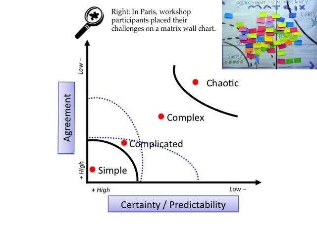

Match Strategies to Challenges With Cynefin

Cynefin is a framework for decision making. It's a tool that helps to navigate uncertainty by aligning the solution to the challenge. Making sense of situations depending on how predictable or unpredictable they are.
Typical mistakes when applying the Cynefin framework
- The Cynefin framework is a pragmatic decision-making model, which focuses on solving the situation currently at hand and not on the future success of a project. If you do not keep this in mind, problems may arise with regard to the project management or the project could fail entirely.
- Applying the simple strategy for a complex or complicated situation: Simple situations are easier to deal with. A lot of managers therefore tend to distort and simplify the situation at play. This can result in fatal decisions being made, thereby jeopardizing the success of the project.
- Tackling a complex situation using the strategies for a complicated situation: A complicated system is managed with expert knowledge and thorough analyses. However, if you use this approach in a complex system, there is a great risk of getting caught up in analysis loops and ineffective processes.
- Failing to recognize a chaotic situation: If the system becomes chaotic, a quick response and the right management technique are vital to get on top of the chaotic situation as quickly as possible. If, as a manager, you act too hesitantly or enact rules that are less than ideal for the company, it can lead to long-term damage.
1. Using Cynefin to Sort Team's Challenges (45 mintues workshop)
One of the most powerful mechanism to help a team choose the right solution to the challenges they have is Agreement-&-Certainty Matrix workshop.
2. Videos
- Introduction video (9 min video)
- Intro to Cynefin by Liz Keogh (10 min video)
3. Articles
- Summary (10 min read)
- Summary (20 min read)
- Volatility, uncertainty, complexity and ambiguity (VUCA) (20 min read)